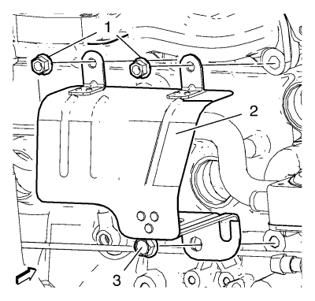
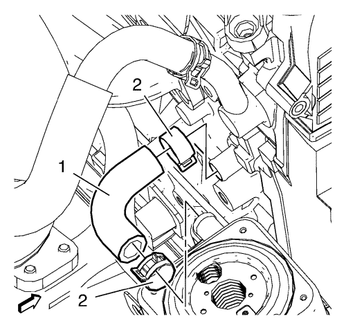

Cruze
Sustitución del tubo de salida del refrigerador de aceite del motor 2.0L Diesel LLW
Procedimiento de desmontaje
Desmonte la pantalla térmica del catalizador. Consultar
Sustitución de la pantalla térmica del catalizador
:
1.6L LDE, LXV y 1.8L 2H0
→
2.0L Diésel LLW
.
Vacíe el aceite de motor. Consultar
Sustitución del aceite de motor y filtro de aceite.
.

Desmonte las 2 tuercas de la pantalla térmica del tubo flexible del refrigerador de aceite del motor (1).
Desmonte el tornillo de la pantalla térmica del tubo flexible del refrigerador de aceite del motor (3).
Desmonte la pantalla térmica del tubo flexible del refrigerador de aceite del motor (2).

Quite las 2 abrazaderas del tubo flexible de salida del refrigerador de aceite del motor (2).
Desmonte el tubo flexible de salida del refrigerador de aceite del motor (1).
Procedimiento de montaje
Monte los 2 tubos flexibles de salida del refrigerador de aceite del motor (1).
Monte las abrazaderas del tubo flexible de salida del refrigerador de aceite del motor (2).
Monte la pantalla térmica del tubo flexible del refrigerador de aceite del motor (2).
Precaución:
Consulte
Precaución con las fijaciones
en la sección Prólogo.
Monte las 2 tuercas de la pantalla térmica del tubo flexible del refrigerador de aceite del motor (1) y apriételas a
33 N·m (25 lib. pie)
.
Monte el tornillo de la pantalla térmica del tubo flexible del refrigerador de aceite del motor (3) y apriételo a
20 N·m (15 lib. pie)
.
Eche aceite de motor. Consultar
Desmontaje del bloque del motor
.
Desmonte la pantalla térmica del catalizador. Consultar
Sustitución de la pantalla térmica del catalizador
:
1.6L LDE, LXV y 1.8L 2H0
→
2.0L Diésel LLW
.
© Copyright Chevrolet. Reservados todos los derechos